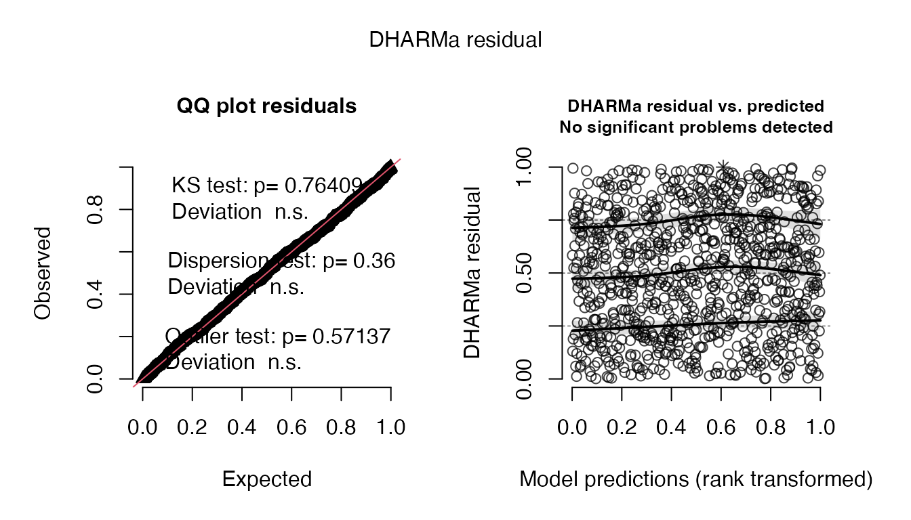

The purpose of this vignette is not to provide detailed
explanation of model set up and results. For this purpose, please read
the documentation of ?phyr::pglmm and the chapter 4 of Ives 2018. The purpose of
this vignette is to show how models are fitted, what is new in phyr
1.5.0 (large phylogenies, more families, confidence intervals, model
comparison and diagnostics) and 1.9.0 (see the next section), and some
cases that are not documented in details.
Changes in phyr 1.9.0
phyr 1.9.0 changes a few defaults and removes old names; code written for earlier versions mostly runs unchanged, but can give (slightly) different results or messages:
- One engine for all models: the sparse code
(
sparse = NULL, the default) is now also used with covariance matrices incov_ranef, with lists inrandom.effects, and withbayes = TRUE(except withrepulsion = TRUE). A covariance matrix that comes from a phylogeny (e.g.ape::vcv(tree)) is converted back to the phylogeny, with a message suggesting to give the phylogeny itself; other matrices are used through their (dense) inverse. The fits are the same as those of the dense code (sparse = FALSE, kept as a reference). - Binomial and poisson models with
random.effectsare fitted with the Laplace approximation by default (they were fitted by PQL): usemethod = "PQL"for the previous estimates. - With
bayes = TRUE,ML.init = TRUEtakes its initial values from the fit by maximum likelihood with the sparse code (Laplace for binomial and poisson models), andranef(),predict()withnewdataandsimulate()withre.form = NAwork with the sparse code. -
pglmm()shows a message when the variance of a random term is estimated at zero (a fit at the boundary, aslme4::lmer());pglmm_is_singular()tells which terms are, andoptions(phyr.boundary.message = FALSE)turns the message off. - The arguments
treeandtree_siteare defunct (give the phylogenies incov_ranef);communityPGLMM()and its helpers are deprecated (usepglmm());communityPGLMM.profile.LRT(),communityPGLMM.matrix.structure()andcommunityPGLMM.predicted.values()were removed (usepglmm_profile_LRT(),pglmm_matrix_structure()andpglmm_predicted_values()). - New: prior
weights,pglmm_boot_LRT()(a parametric bootstrap test of nested models), and methods for the emmeans, marginaleffects and effects packages (see below).
Families
The families of pglmm() (and
pglmm_compare()), with what each supports. With
bayes = FALSE (the default), models are fitted by maximum
likelihood (REML = FALSE) or restricted maximum likelihood
(REML = TRUE, the default); the estimates are those of the
package in the last column (checked in the tests of phyr, also for
nested phylogenetic terms such as (1 | sp__@site), which
those packages fit only with the full covariance matrix of the
observations).
family = |
Response | Link | Estimated dispersion (element of the fit) | bayes = FALSE |
bayes = TRUE |
Same estimates as |
|---|---|---|---|---|---|---|
"gaussian" |
continuous | identity | residual variance (s2resid) |
exact likelihood | yes |
lme4::lmer(), glmmTMB()
|
"binomial" |
0/1, cbind(successes, failures), or proportions with
the numbers of trials as weights
|
logit; probit and cloglog with
binomial(link = "probit") and
binomial(link = "cloglog")
|
none (an observation-level term is added for data with trials) | Laplace (default); PQL with method = "PQL" (logit
only) |
yes (logit) |
lme4::glmer(), glmmTMB()
|
"poisson" |
counts | log | none (an observation-level term is added) | Laplace (default); PQL with method = "PQL"
|
yes |
lme4::glmer(), glmmTMB()
|
"nbinomial" |
overdispersed counts | log |
theta (variance mu + mu^2 / theta) |
Laplace | yes | glmmTMB(family = nbinom2) |
"Gamma" |
positive continuous (e.g. biomass) | log | shape |
Laplace | no | glmmTMB(family = Gamma(link = "log")) |
"betabinomial" |
overdispersed successes out of trials (cbind(), or
proportions with weights) |
logit |
phi (precision) |
Laplace | no | glmmTMB(family = betabinomial()) |
"beta" |
proportions strictly between 0 and 1 (e.g. cover) | logit |
phi (precision) |
Laplace | no | glmmTMB(family = beta_family()) |
"zeroinflated.poisson" |
counts with excess zeros | log |
zi (probability of zero inflation, the same for all
observations) |
Laplace | yes | glmmTMB(family = poisson, ziformula = ~1) |
"zeroinflated.nbinomial" |
overdispersed counts with excess zeros | log |
theta, zi
|
Laplace | yes | glmmTMB(family = nbinom2, ziformula = ~1) |
"zeroinflated.binomial" |
successes and failures with excess zeros | logit | zi |
no | yes |
Notes:
- Prior
weightsdivide the residual variance of gaussian models (aslmer()), are the numbers of trials of binomial and beta-binomial models (with proportions as response), and multiply the log-likelihood of each observation for the other families (asglm()andglmmTMB()); withbayes = TRUE, they are available for the gaussian, binomial, poisson and negative binomial families. - An observation-level random term
1|obsis added to poisson models and binomial models with trials (add.obs.re = TRUE) to account for overdispersion; the families with a dispersion parameter do not need it. A nested term without phylogeny with one observation per combination of its grouping variables (e.g.(1 | sp@site)) is such a term: it replaces1|obs, and is dropped (with a warning) when it cannot be estimated (gaussian and binary data). - For the zero-inflated families,
fitted()andpredict(type = "response")give the mean of the response,(1 - zi) * mu; the random terms act on the count part. - All families take random slopes, nested terms (with
repulsion), covariance matrices incov_ranef,random.effectslists andoffset()terms, and work with the methods listed at the end of this vignette.
How models are fitted
With bayes = FALSE, the binomial, poisson and other
non-gaussian families are fitted with the Laplace approximation of the
likelihood (see the table above for the packages with the same
estimates).
Binomial and poisson models can still be fitted by penalized
quasi-likelihood with method = "PQL" (as in earlier
versions), which underestimates the variances of random terms for binary
data and small counts. With bayes = TRUE, models are fitted
by INLA.
When the model has phylogenies
(cov_ranef = list(sp = phy)), pglmm() uses the
sparse precision matrix of the phylogeny (including its internal nodes)
instead of the dense covariance matrix of the species
(sparse = NULL, the default, which is
sparse = TRUE whenever possible). Both give the same model,
but time and memory then grow about linearly with the number of
species.
Large phylogenies
As an example, with 5000 species at 20 sites (80,000 observations),
the binomial and poisson models
y ~ x + (1 | sp__) + (1 | site) were fitted by maximum
likelihood in about 7 to 8 seconds each, with less than 1 GB of memory,
while glmmTMB() with the same model (a
propto() term with the phylogenetic correlation matrix)
needed about 11 to 12 minutes and 12 to 13 GB, with the same estimates
(see the vignette “Performance benchmark”). Nothing special is needed
for such models:
library(phyr)
nsp <- 5000
nsite <- 20
phy <- ape::rcoal(nsp, tip.label = paste0("sp", 1:nsp))
d <- expand.grid(sp = phy$tip.label, site = paste0("s", 1:nsite))
d$x <- rnorm(nrow(d))
d$y <- rbinom(nrow(d), 1, plogis(0.3 * d$x))
fit <- pglmm(y ~ x + (1 | sp__) + (1 | site), data = d, family = "binomial",
cov_ranef = list(sp = phy))On a Mac, R is several times faster with Apple’s Accelerate BLAS
library: pglmm() shows a message with the command to switch
for large models when R uses its reference BLAS.
Example data
The examples below use simulated data: 60 species at 15 sites, with phylogenetic and non-phylogenetic variation among species.
library(phyr)
set.seed(1)
nsp <- 60
nsite <- 15
phy <- ape::rcoal(nsp, tip.label = paste0("sp", 1:nsp))
d <- expand.grid(sp = phy$tip.label, site = paste0("s", 1:nsite), stringsAsFactors = FALSE)
d$x <- rnorm(nrow(d))
i <- match(d$sp, phy$tip.label)
j <- match(d$site, unique(d$site))
C <- ape::vcv(phy)
C <- C / max(diag(C))
u_phy <- as.vector(t(chol(C)) %*% rnorm(nsp, sd = 0.6))
eta <- 0.3 * d$x + u_phy[i] + rnorm(nsp, sd = 0.4)[i] + rnorm(nsite, sd = 0.5)[j]
d$y <- eta + rnorm(nrow(d))
d$effort <- runif(nrow(d), 0.5, 2)
d$count <- rnbinom(nrow(d), mu = d$effort * exp(eta), size = 2)Families and offsets
Counts with more variation than the poisson distribution can be
fitted with the negative binomial family ("nbinomial", with
its dispersion theta estimated), and different sampling
efforts with an offset:
fit_nb <- pglmm(count ~ x + offset(log(effort)) + (1 | sp__) + (1 | site),
data = d, family = "nbinomial", cov_ranef = list(sp = phy))
fit_nb
#> Generalized linear mixed model for negative binomial data fit by Laplace approximation (restricted maximum likelihood)
#>
#> Formula: count ~ x + offset(log(effort)) + (1 | sp__) + (1 | site)
#>
#> logLik AIC BIC
#> -1244 2501 2529
#>
#> Dispersion parameter of the negative binomial distribution (theta):
#> theta
#> 2.271
#>
#> Random effects:
#> Variance Std.Dev
#> 1|sp 0.154164 0.39264
#> 1|sp__ 0.004183 0.06467
#> 1|site 0.407339 0.63823
#>
#> Fixed effects:
#> Value Std.Error Zscore Pvalue
#> (Intercept) -0.487636 0.294107 -1.6580 0.09731 .
#> x 0.213111 0.039655 5.3741 7.695e-08 ***
#> ---
#> Signif. codes: 0 '***' 0.001 '**' 0.01 '*' 0.05 '.' 0.1 ' ' 1Positive continuous responses (e.g. biomass) can be fitted with
family = "Gamma" (log link).
Prior weights are given with weights, as in
lm() and glm(): for gaussian models, the
residual variance of an observation is divided by its weight (as
lme4::lmer()); for binomial models, the response is a
proportion and the weights are the numbers of trials; for the other
families, the weights multiply the log-likelihood of each observation.
For example, with a column w of weights in
d:
Phylogenetic and non-phylogenetic terms
A phylogenetic term such as (1 | sp__) fits two terms:
1|sp__, with the phylogenetic covariance matrix, and
1|sp, independent among species (random slopes
(x | sp__) likewise fit x|sp__ and
x|sp). The variation among species is split between a part
that follows the phylogeny and a part specific to each species, and the
data decide which is more important (see the section “Phylogenetic and
non-phylogenetic terms” of ?pglmm).
fit <- pglmm(y ~ x + (1 | sp__) + (1 | site), data = d, cov_ranef = list(sp = phy))
VarCorr(fit)
#> Variance Std.Dev
#> 1|sp 0.128801383 0.35888910
#> 1|sp__ 0.003183415 0.05642176
#> 1|site 0.406248213 0.63737604
#> residual 1.118892231 1.05777702The variances of terms with a covariance matrix are on the scale of
the matrix standardized to have a determinant of one: multiply them by
fit$scale_factors before comparing them with other terms.
The proportion of the variance among species that is phylogenetic, a
measure of phylogenetic signal, is then:
Confidence intervals
confint() gives Wald intervals for the fixed effects and
profile likelihood intervals for the variances (as
confint(method = "profile") of lme4). They show how well
the data separate the phylogenetic and non-phylogenetic variances: when
the two are hard to separate, both intervals are wide, and include
zero.
confint(fit)
#> 2.5 % 97.5 %
#> (Intercept) -1.0186097565 0.03046041
#> x 0.2380503108 0.37299987
#> 1|sp 0.0645616773 0.23166368
#> 1|sp__ 0.0004527303 0.01930668
#> 1|site 0.2010344149 0.97022057
#> residual 1.0174947415 1.23420671Comparing models
anova() compares nested models with likelihood ratio
tests. Models with different fixed effects fitted with
REML = TRUE are refitted by maximum likelihood. When the
models differ by a variance, the p-value is conservative (a variance of
zero is at the boundary of its range); pglmm_profile_LRT()
tests a random term with the p-value halved.
fit0 <- pglmm(y ~ x + (1 | sp) + (1 | site), data = d)
anova(fit0, fit)
#> fit0: y ~ x + (1 | sp) + (1 | site)
#> fit: y ~ x + (1 | sp__) + (1 | site)
#>
#> npar AIC BIC logLik deviance Chisq Df Pr(>Chisq)
#> fit0 5 2792.2 2816.2 -1391.1 2782.2
#> fit 6 2784.4 2813.2 -1386.2 2772.4 9.8333 1 0.001714 **
#> ---
#> Signif. codes: 0 '***' 0.001 '**' 0.01 '*' 0.05 '.' 0.1 ' ' 1
pglmm_profile_LRT(fit, re.number = which(names(fit$ss) == "1|sp__"))
#> $LR
#> [1] 4.916647
#>
#> $df
#> [1] 1
#>
#> $Pr
#> [1] 0.000856906These tests rely on the chi-square distribution of the likelihood
ratio, which can be a poor approximation with few levels of the random
terms or few effectively independent species: in simulations of binary
data with phylogenetic signal (100 species, 15 sites), the Wald test of
a fixed effect rejected a true null hypothesis in about 9% of the data
sets and the likelihood ratio test of anova() in about 11%,
instead of 5% (see the vignette “Performance benchmark”).
pglmm_boot_LRT() gives a parametric bootstrap test instead
(as pbkrtest::PBmodcomp()), from refits of both models to
responses simulated from the smaller one; it rejected the true null
hypothesis in 4% of the data sets:
fit_x0 <- pglmm(y ~ 1 + (1 | sp__) + (1 | site), data = d, cov_ranef = list(sp = phy))
pglmm_boot_LRT(fit, fit_x0, nsim = 500, seed = 1, ncores = 4)Marginal means, marginal effects and effect plots
Models fitted with bayes = FALSE work with the emmeans
(estimated marginal means and contrasts), marginaleffects (slopes,
comparisons and predictions averaged over the data) and effects (effect
plots) packages. They use the fixed effects and their covariance matrix,
with the random effects at zero, as for lme4 models (for
marginaleffects, use re.form = NA for that; by default, its
predictions include the estimated random effects). Until marginaleffects
knows the class of phyr models, set an option first:
Residual diagnostics
The DHARMa package calculates scaled residuals from simulations of
the fitted model (simulate()). It warns that the class of
the model is not among those it lists, but the residuals are
correct.
res <- suppressWarnings(DHARMa::simulateResiduals(fit_nb, n = 250))
plot(res)
Phylogenetic uncertainty
To account for the uncertainty of the phylogeny, the model can be
fitted with several candidate trees (e.g. from the posterior
distribution of a Bayesian phylogenetic analysis) and the estimates
combined with Rubin’s rules, treating the trees as imputations of the
unknown phylogeny. tidy() and glance()
(generics of the broom packages) make mice::pool() work
with these models:
Fit a binomial model with success and failures
To fit a binomial model to a data frame with columns of success and
failures (say named as yes and no,
respectively), use
Prepare random terms for complex models that cannot be set up with formula
Sometimes, users may want to prepare their own list of random terms
to fit phylogenetic generalized linear mixed models in more flexible
ways. For example, users may want to add an extra random term on top of
those specified by the model formula. For this, we can extract the list
of random terms generated by the model formula using
prep_dat_pglmm() and then append the one we want to add.
See ?phyr::prep_dat_pglmm for details about its arguments.
Since phyr 1.9.0, models with random.effects are fitted
with the sparse code (and binomial and poisson models with the Laplace
approximation); covariance matrices that come from a phylogeny are
converted back to it, and identical rows of a covariance matrix of the
observations (e.g. replicated observations of a species at a site) are
merged (see random.effects in ?pglmm).
Other functions to work with models fitted with
pglmm()
All models fitted with pglmm() have class of
communityPGLMM. Here is a list of functions that can be
used with these models.
-
summary(),print(): summary of the fit -
fixef(): estimates of fixed effects, with their standard errors and p-values;coef()andvcov(): the estimates as a vector and their covariance matrix -
ranef(): estimates of each level of random terms (e.g. one value per species), optionally with their conditional standard deviations (condVar = TRUE) -
VarCorr(): variances and standard deviations of random terms -
confint(): confidence intervals of fixed effects and variances -
logLik(),AIC(),BIC(),anova(): log-likelihood and model comparison -
pglmm_profile_LRT(): likelihood ratio test of random terms -
pglmm_boot_LRT(): parametric bootstrap likelihood ratio test of nested models -
pglmm_is_singular(): whether the fit is at the boundary (variances estimated at zero) -
fitted(),pglmm_predicted_values(): fitted values -
predict(): predicted values, also for new data (newdata) -
residuals(): residuals -
simulate(): simulated responses (e.g. for DHARMa) -
update(): refit with a changed formula or arguments -
tidy(),glance(): data frames of the estimates and of the fit (broom and broom.mixed) -
terms(),model.matrix(): terms and design matrix of the fixed effects; with them, the emmeans, marginaleffects and effects packages work with these models -
pglmm_iV(): inverse of the covariance matrix of the observations -
pglmm_matrix_structure(): the whole covariance matrix -
pglmm_plot_ranef(),pglmm_plot_re(): plot images of the covariance matrices of random terms, see the vignetteplot-re -
plot_data(): plot the data used (and optionally predicted) by the fitted model -
plot_bayes(): plot posterior distributions of random and fixed effects (bayes = TRUE)